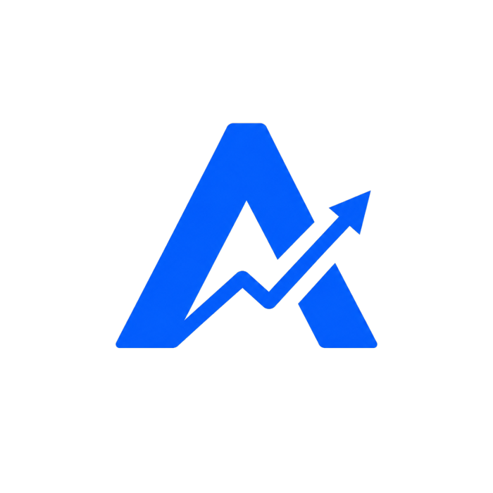

alphasign.trade
LIVE

Narrative
Quant
Latent state
Executive
Alpha Sign
A multi-agent financial intelligence platform that turns one ticker into live narrative research, quantitative analysis, regime detection, and an executive PDF report.
- Orchestrates 4 specialized agents through a structured research and synthesis loop.
- Streams agent activity to a Next.js dashboard using Server-Sent Events.
- Combines market data, news research, Kalman-style forecasting, and downloadable reports in one workflow.
Next.jsTypeScriptPythonMulti-agent AISSEDocker